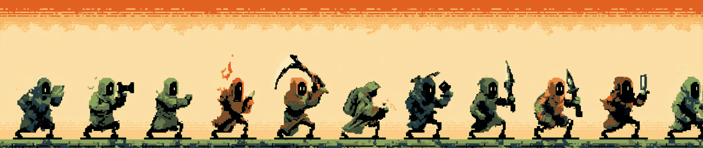

方案 A · 转职树（Job Tree）
设计主张：把履历种成一棵真的树。树干＝时间线（根部 2007，树冠 NOW），每次转职是树干上的一个分叉，支线是斜出去的细枝，技能是结在枝上的果。七个身份标签是筛选器，点一下只亮那一枝。
← 左右滑动看整棵树 →
已点亮
修炼中（会呼吸）
空芽 · 还没点的位置
灰绿＝该章节不挂身份标签（求学期 / 短期支线）
转职链 · 十余次改行，一排小人各自拿着当时的家伙

本方案取舍 / TRADE-OFFS
强项
一屏之内同时交代三层信息：
时间顺序
（从下往上长）、
身份归属
（一枝一色）、
技能产出
（结在枝上的果）。树形本身就是插画，首屏不必再配任何装饰图。
强项
身份筛选做的是
减法而不是跳转
：没选中的枝叶淡到 13% 但仍留在原位，读者始终看得见"这个人还有别的世界"，而不是被切到另一个页面。空芽还留出"没点的位置"，让它像技能树而不像简历。
代价
有机树形是
手工排定的坐标
。再加一个章节或十个技能，就得回来重调枝干角度与叶片错位，做不到像列表那样自动流式增长——这是"好看"的直接成本。
代价
窄屏下树必须
保持纵横比
，只能在容器内横向滑动看全；同时成都、华科、亚利桑那、Quantic、INSEAD 这五个章节不挂身份标签，任何筛选下都处于淡出态，它们的分量只能靠常驻的章节牌撑住。